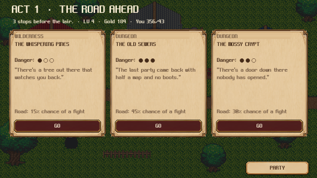
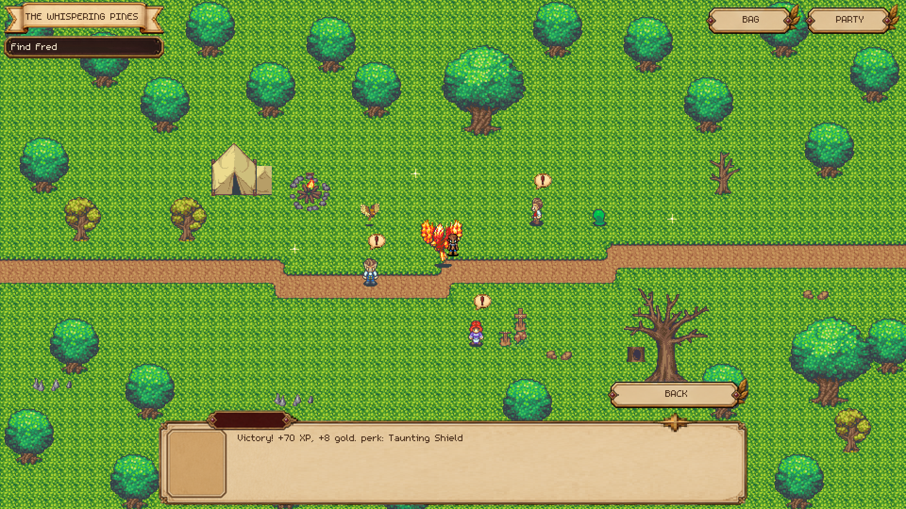
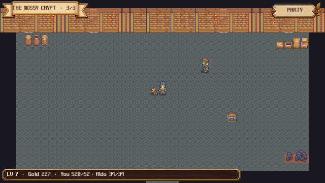
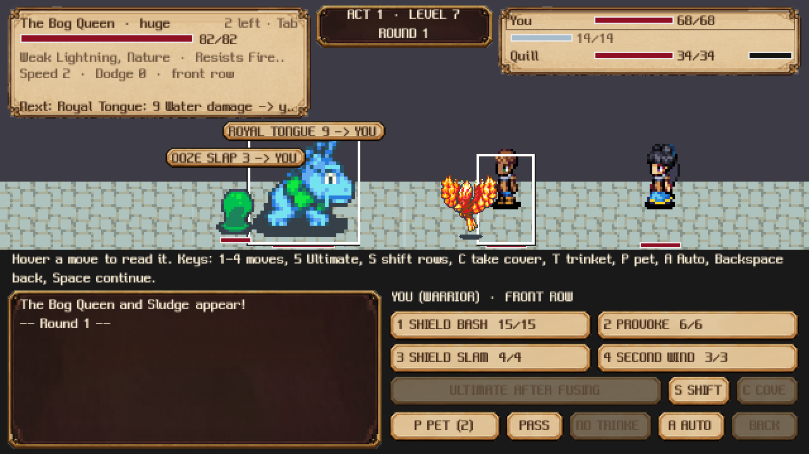
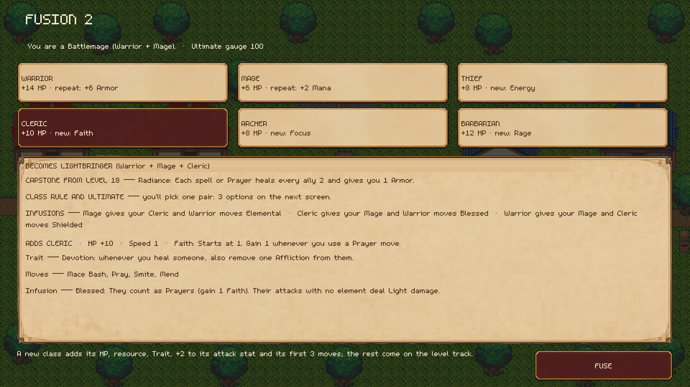
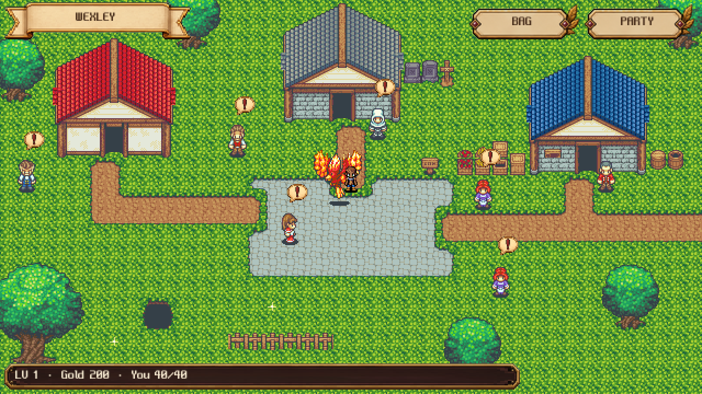

THE IDEA
Start as a Warrior, Mage, Thief, Cleric, Archer or Barbarian. At the end of each act, fuse in a second class, then a third. A Warrior who takes up magic becomes a Battlemage; add a Cleric and you're a Lightbringer. Every mix is its own named class with its own rules, and changing one ingredient makes something new.
Each run is a short campaign across three acts: towns, wilderness roads and dungeons you explore by clicking around, companions to recruit, and a boss waiting at the end of every act.
SCREENS






IN THIS PROTOTYPE
- Six starting classes and every two- and three-class fusion
- Three acts, each ending at a boss: the Bog Queen, the Gloom Lord and the Hollow King
- Twenty levels of new moves, stronger versions and perks
- Gear in five rarities, including two Legendaries (one is a sword named Fred)
- Companions with their own backstories and fusion paths
- Collectible pets, and a Class Book that remembers every class you've made
HOW TO PLAY
Click everything. In battle, pick a move for each party member, then a target. 1–4 use moves, 5 your Ultimate, Tab picks the next target, A hands your companions to Auto, and Space continues.
Your progress saves in this browser after every run. To start over, open Options on the main menu and choose Restart Account.